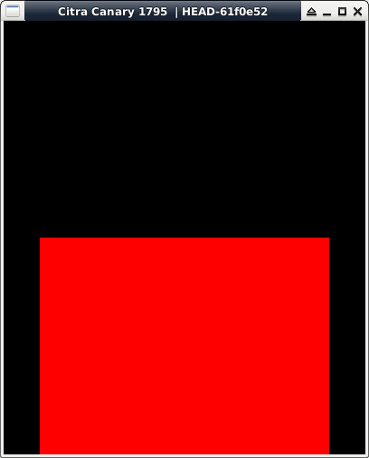

參考資訊：
https://hub.docker.com/r/greatwizard/devkitarm-3ds
main.c
#include <3ds.h>
#include <stdio.h>
#include <string.h>
int main(void)
{
int x = 0;
int y = 0;
u8 *fb = NULL;
gfxInitDefault();
gfxSetDoubleBuffering(GFX_BOTTOM, false);
fb = gfxGetFramebuffer(GFX_BOTTOM, GFX_LEFT, NULL, NULL);
for (y = 0; y < 240; y++) {
for (x = 0; x < 320; x++) {
fb[0] = 0x00;
fb[1] = 0x00;
fb[2] = 0xff;
fb += 3;
}
}
gfxFlushBuffers();
gfxSwapBuffers();
gspWaitForVBlank();
svcSleepThread(3000000000LL);
gfxExit();
return 0;
}
完成
